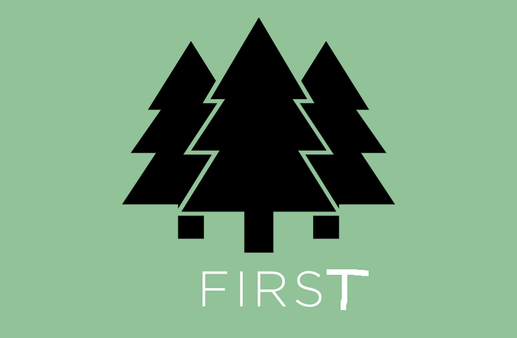

Whether it’s a client or server-side component, a Node module or a piece of visual UI, components that are large are inherently more complex to maintain than those than are small.
In fact, the secret to efficiently building ‘large’ things is generally to avoid building them in the first place. Instead, compose your large thing out of smaller, more focused pieces. This makes it easier to see how the small thing fits within the broader scope of your large thing. These concepts apply to existing ways of doing things, including Web Components.
Focus and modularity has worked to some degree of success in the Node community and is equally as valuable across other parts of our field for a few reasons:
Smaller APIs are easier to learn and teach to others. This is generally helped if you do one thing and do it well.
Code reuse can save you time. Reusability in itself is often a side-product of writing code that happens to be well structured and well defined. It does help when you can just drop in an existing component vs. writing one from scratch. You're likely to discover flaws in the original design that you improve on over time, but the more your component is reused, the more you fix these flaws, improving reusability.
Improved composability. This means new components can be built by extending existing ones. This again allows for a great deal of code reuse, avoiding re-implementation of the same functionality across projects.
An increase in maintainability is possible thanks to a reduction in complexity. By splitting out a component into something smaller, it’s generally easier to test and document. Keeping your component source DRY can help.
Separation of concerns. If each component addresses a specific concern, this simplifies the update cycle as one component doesn't always need to know the details of others. Note that separation of concerns does not always equate to separation of technologies. Keeping logical, related parts of a system together can make it more easy to understand and maintain.
Simplified debugging. This is more implementation specific, but granularity should make it more straight-forward to identify and fix problems by making it simpler to determine the true source of errors.
Easier understanding of your large system as you’ve broken it into smaller, more well grained pieces
On the whole, approaching components with modularity and a focus in mind increases reuse, eases maintenance and improves extensibility. Diligence does need to be taken with making something ‘focused’ however.
If you’re building components to be shared with the community or even just your team, ask yourself if features in your API will be used by 90% of users. If so, it’s likely pretty core functionality and should stay. If a feature it going to be used by the 10%, it should probably be a separate component or module. Avoid code bloat.
Some may read this and think, "Great!.. but practically speaking modularity from the get-go is not always possible". This is fine. Some developers find it more feasible to build an integrated solution first and then extract out useful modules. This can save time on public interfaces that might turn out to be wrong, but ultimately leads to the same end-goal: having a collection of components that can be reused in future projects.
When you’re trying to build a component, whether it’s visual or non-visual try to keep in mind four things:
Keep it (F)ocused.
Keep it (I)ndependent.
Keep it (R)eusable.
Keep it (S)mall.
Keep it (T)estable.
or in short, FIRST.
~ Addy & Pascal
With special thanks to Pascal Hartig, Sindre Sorhus and Stephen Sawchuk for their review.